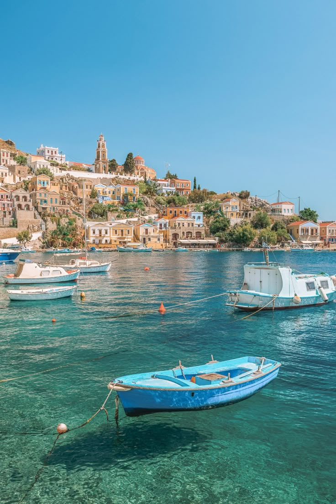
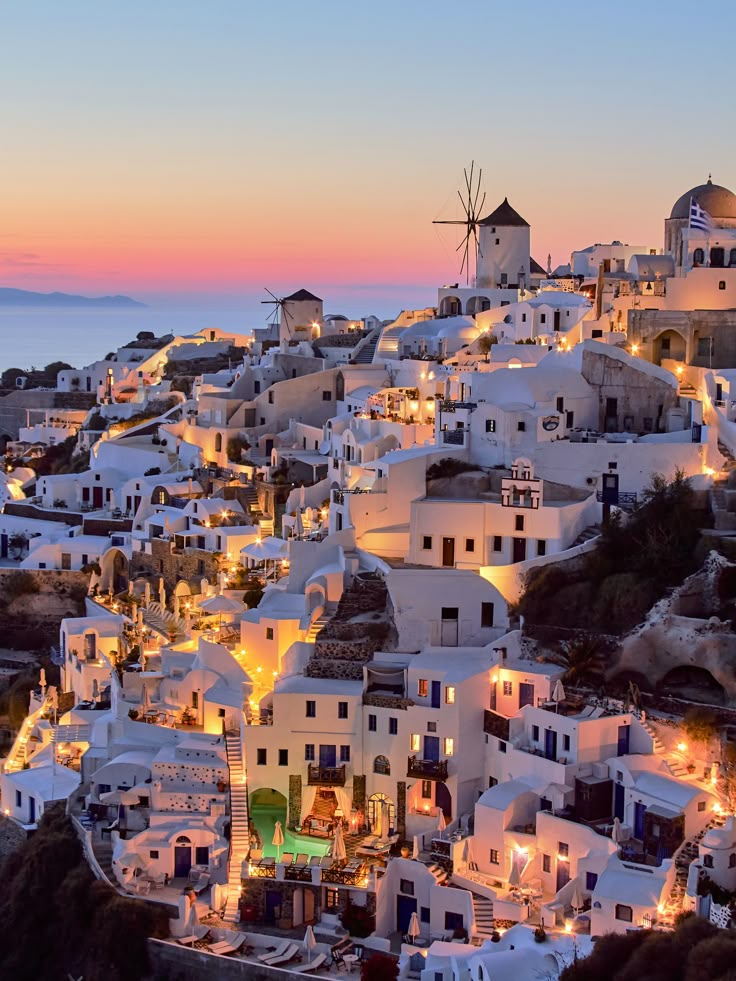
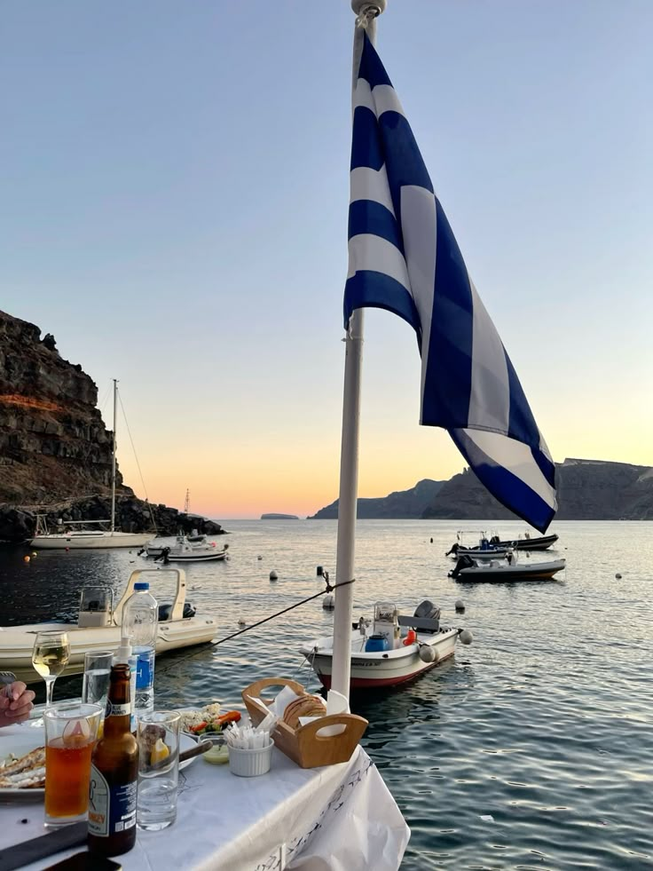
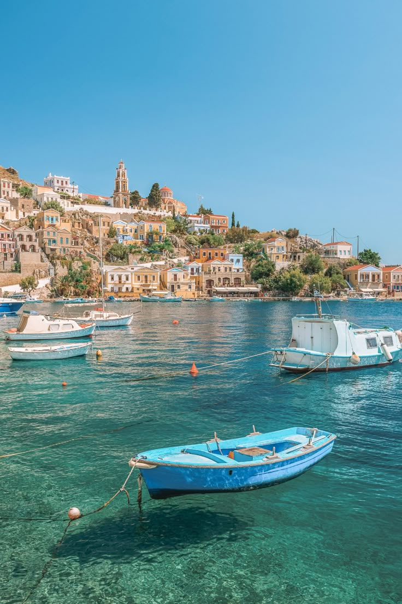
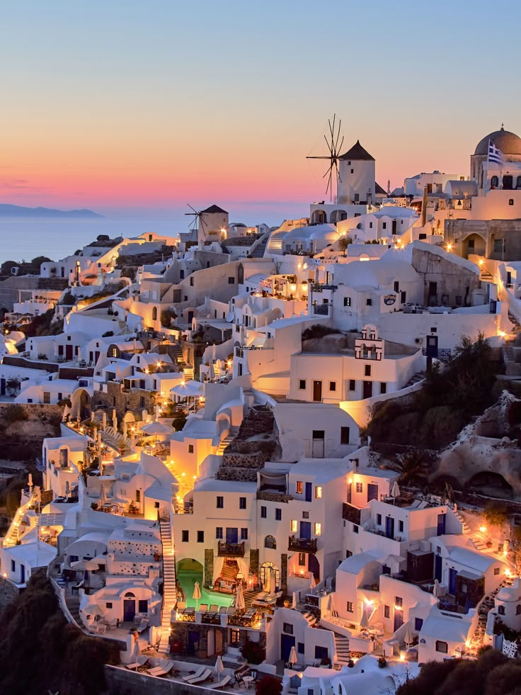
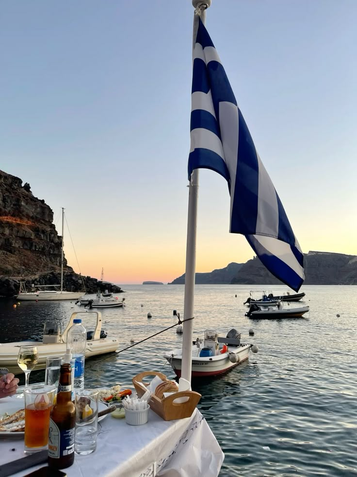
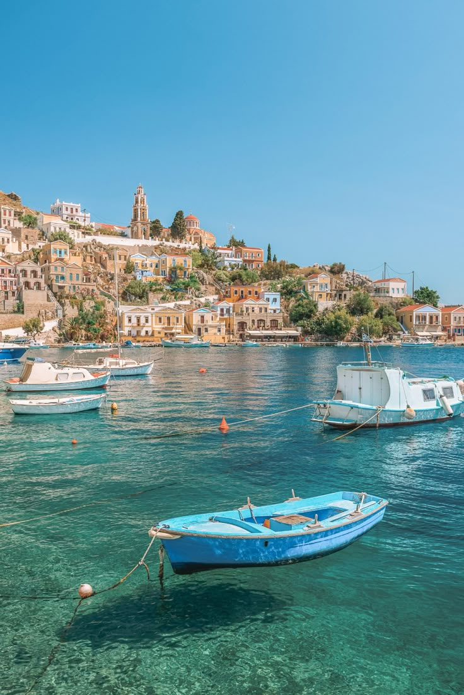
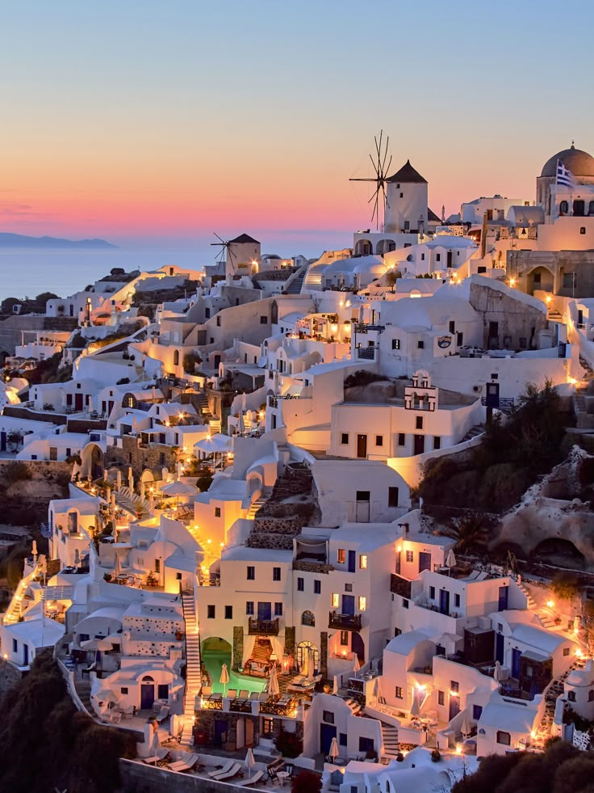
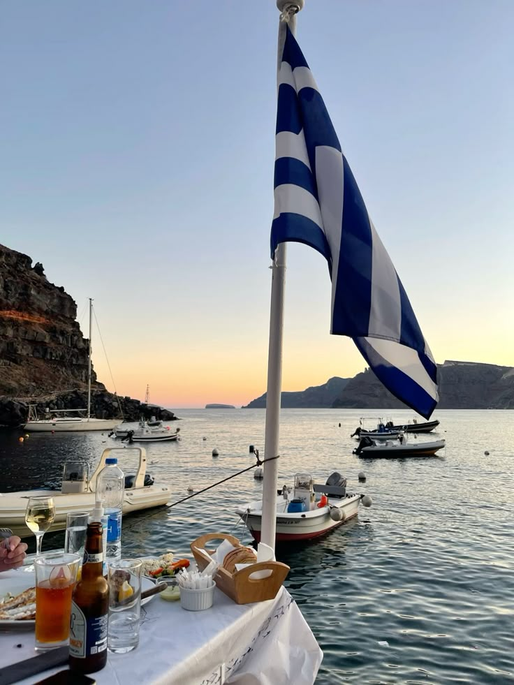

סנטוריני היא אחד האיים היפים והמפורסמים ביותר ביוון, הנמצא בדרום הים האגאי ונוצר כתוצאה מהתפרצות געשית אדירה לפני אלפי שנים. האי ידוע בבתי האבן הלבנים עם הגגות הכחולים, בסמטאות הציוריות ובנופים עוצרי נשימה של השקיעות מעל לים. העיירות פירה ואויה הן מוקדי התיירות המרכזיים, עם מסעדות רומנטיות, חופים ייחודיים בצבעי לבה שחורה ואדומה, ואווירה קסומה שמשלבת טבע, היסטוריה ויוקרה.


